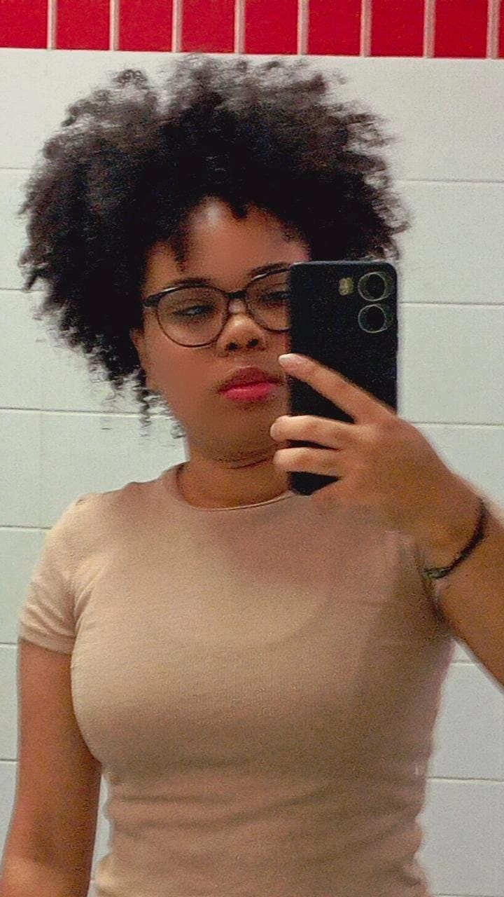

OLÁ, EU SOU A CAMILA
Sou estudante de Informática com interesse em desenvolvimento web, design e tecnologias criativas. Busco oportunidades para aplicar meus conhecimentos, aprender com novos desafios e crescer profissionalmente na área de tecnologia.
Sobre mim
Sou proativa, comunicativa e tenho facilidade em aprender e trabalhar em equipe. Participei da Technovation 2024 e estou sempre em busca de novos projetos e experiências que me ajudem a evoluir como profissional.
CONTATE-MEDetalhes
- Nome: Camila Mirian Ferreira dos Santos
- Idade: 17 anos
- Experiência Profissional: Em busca da primeira oportunidade
- Local: Bragança Paulista - SP, Brasil
Educação
- Técnico em Informática - IFSP (Cursando 3º ano)
Habilidades
- Desenvolvimento Web (HTML, CSS, JavaScript)
- Design Básico
- Proatividade e Trabalho em Equipe